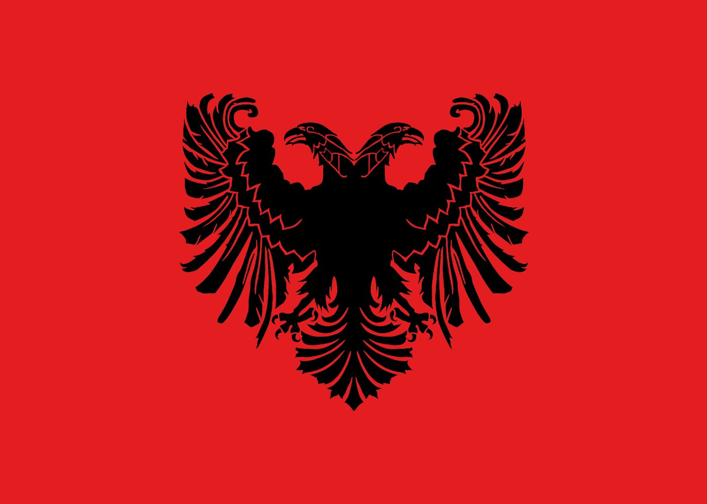

☀️ Light
+10 ⭐

Besa
Flow
Learn Albanian — Gheg Dialect
"Besa" — honor, promise, and Albanian heritage
Words Practiced
0
/ 718
100
Basic
conversations
200
30% of
daily speech
500
50% of
all conversations
2000
Fluent
speaker
🎵
Songs
Learn the words you already sing
›
Study Mode
🃏
Flashcards
Flip & reveal
🎯
Multiple Choice
4 options
🔊
Listen & ID
Hear it, pick it
🎲
Mixed
All modes
Category
All selected
All
None
Voice
🗣 Male
🗣 Female
How Many Questions?
10
25
50
100
START SESSION →
←
Songs
Pick a song to learn its words
Songs are drafts — please verify lyrics line-by-line with family. Use 🚩 Report on any card to flag a fix.
←
Flashcards
Card 1 of 25
🔥
0
🦅
Eagle
Tap to reveal Albanian
Animals
Shqiponja
shk-ee-po-nya
Gheg: Shqiponja
Albanian
🤔 Do you know what it means?
Meaning
Context
Word by word
👆 Tap the card to reveal
🔊 Hear it spoken
✗ Didn't know
✓ Got it!
Continue →
🔊 Hear again — say it out loud
🚩 Report this word
←
Multiple Choice
Question 1 of 25
🔥
0
🦅
What is the Albanian for…
Eagle
Pick the Albanian word
Continue →
🚩 Report this word
Shkëlqyeshëm!
You got 23 of 25 correct
23
Correct
92%
Score
25
Questions
Play Again →
← Change Settings
Achievement Unlocked
10 Streak! 🔥
Shum mirë — Very good!
♪ Vallja e Rugovës — Shota ♪
Vazhdo — Keep Going →
🚩 Report this word
Word:
What's wrong?
Your suggestion
(optional)
Cancel
Send report